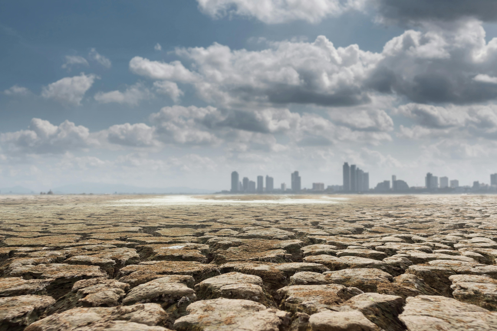
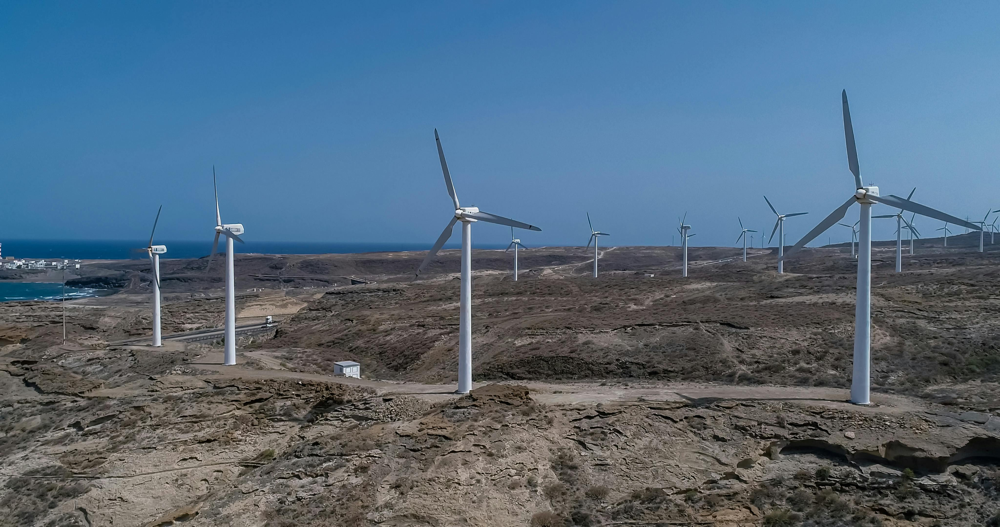
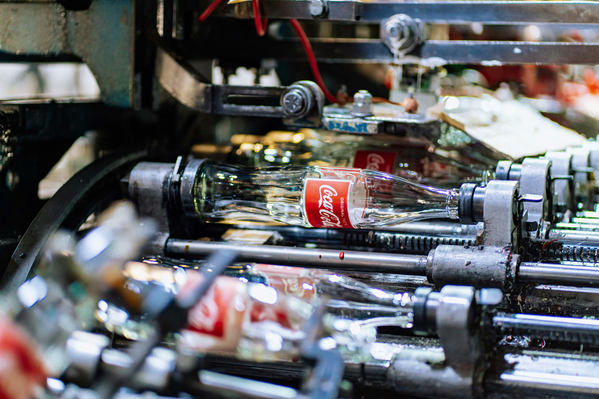

Causas
Empecemos por el principio. El efecto invernadero es un proceso natural que permite a la Tierra mantener las condiciones necesarias para albergar vida: la atmósfera retiene parte del calor del Sol; sin el efecto invernadero, la temperatura media del planeta sería de 18ºC bajo cero.
La atmósfera está compuesta por diversos gases que, en la proporción adecuada, cumplen su cometido. El problema está cuando las actividades del ser humano aumentan la emisión de gases de efecto invernadero en la atmósfera y ésta retiene más calor del necesario, provocando que la temperatura media del planeta aumente y se produzca lo que popularmente llamamos calentamiento global.

Algunas de las causas son
La generación de energía
La generación de electricidad y calor a través de los combustibles fósiles provoca una gran cantidad de emisiones globales. La mayoría de la electricidad se genera todavía con la combustión de carbón o gas, lo que produce dióxido de carbono y óxido nitroso, que son potentes gases de efecto invernadero que cubren el planeta y atrapan el calor proveniente del sol. A nivel global, algo más de un cuarto de la electricidad proviene de fuentes de energía renovables eólicas y solares que, al contrario que los combustibles fósiles, emiten poca o ninguna cantidad de gases o contaminantes en el aire.

Productos de fabricación
La industria y las fábricas producen emisiones, en su mayoría provenientes de la quema de combustibles fósiles destinada a generar energía para la fabricación de cemento, hierro, acero, componentes electrónicos, ropa y otros bienes. La minería y otros procesos industriales también generan gases, de la misma forma que lo hace el sector de la construcción. La maquinaria utilizada en los procesos de fabricación a menudo realizados mediante carbón, petróleo o gas, y con algunos materiales, como los plásticos, están compuestos de sustancias químicas derivadas de los combustibles fósiles. La industria manufacturera es una de las que más contribuyen a las emisiones de gases de efecto invernadero a nivel mundial.

Un consumo excesivo
Su hogar, el uso que hace de la energía, el modo de desplazarse, lo que come, lo que derrocha, todo ello afecta a la emisión de gases de efecto invernadero. Y lo mismo ocurre con el consumo de bienes como la ropa, los componentes electrónicos y los productos fabricados en plástico. Un gran porcentaje de las emisiones de gases de efecto invernadero están ligadas a los hogares particulares. Nuestro estilo de vida tiene un profundo impacto en el planeta. Los más ricos son los que tienen mayor responsabilidad: el 1 por ciento de la población mundial con mayor riqueza, en conjunto genera más emisiones de gases de efecto invernadero que el 50 por ciento más pobre.